Joias do Infinito 💎
As Joias do Infinito são seis artefatos extremamente poderosos que desempenharam um papel
importante na história do UCM. Cada uma possui um poder diferente e, juntas, são capazes de
alterar completamente o destino do universo.
Joia do Espaço
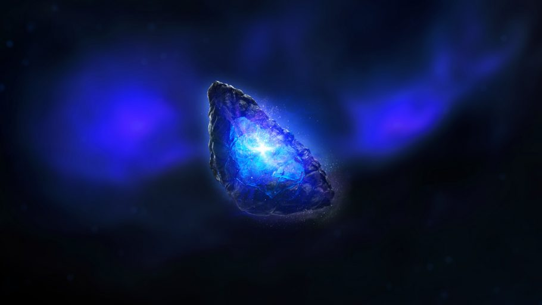
Permite manipular o espaço e realizar teletransportes. Ficava dentro do Tesseract. Aparece em Capitão
América: O Primeiro Vingador, Os Vingadores, Thor: Ragnarok, Vingadores: Guerra Infinita e Vingadores: Ultimato.
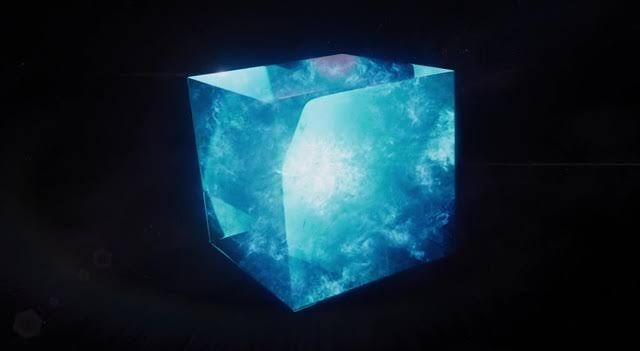
Joia da Mente
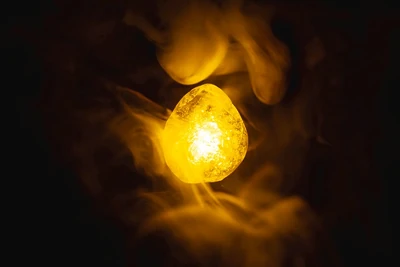
Permite controlar mentes e possui grande poder sobre a inteligência. Estava no cetro de Loki e posteriormente na
testa do Visão. Aparece em Os Vingadores, Capitão América: O Soldado Invernal, Vingadores: Era de Ultron,
Vingadores: Guerra Infinita e Vingadores: Ultimato.
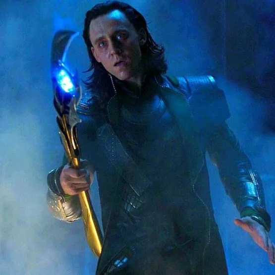
Joia da Realidade
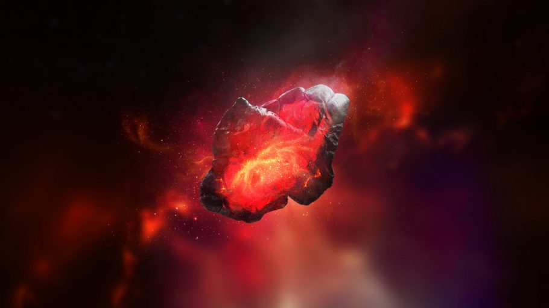
Permite alterar a realidade e as propriedades da matéria. Aparece inicialmente como o Éter. Está em
Thor: O Mundo Sombrio, Vingadores: Guerra Infinita e Vingadores: Ultimato.
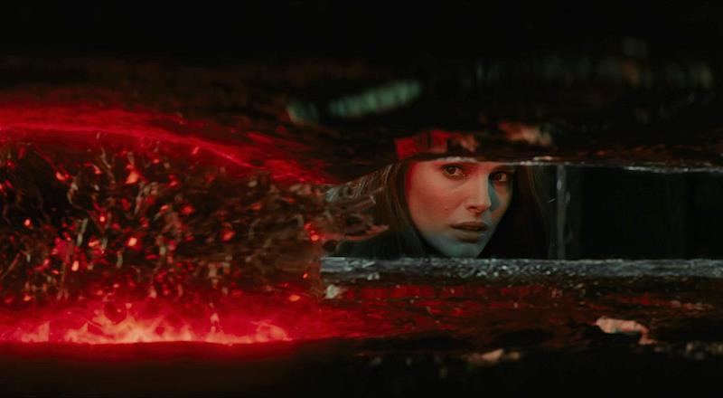
Joia do Poder
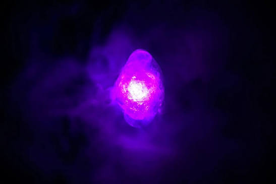
Concede enorme poder destrutivo e energia cósmica. Estava dentro do Orbe. Aparece em Guardiões da
Galáxia, Vingadores: Guerra Infinita e Vingadores: Ultimato.
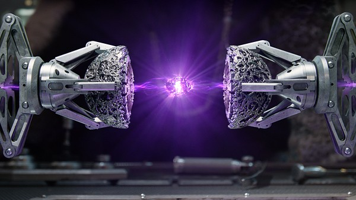
Joia do Tempo
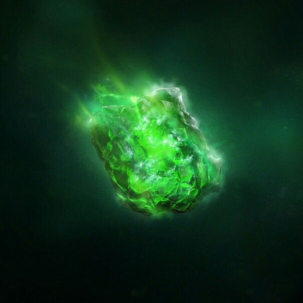
Permite manipular o tempo, podendo avançar, voltar ou criar ciclos temporais. Estava no Olho de Agamotto.
Aparece em Doutor Estranho, Vingadores: Guerra Infinita e Vingadores: Ultimato.
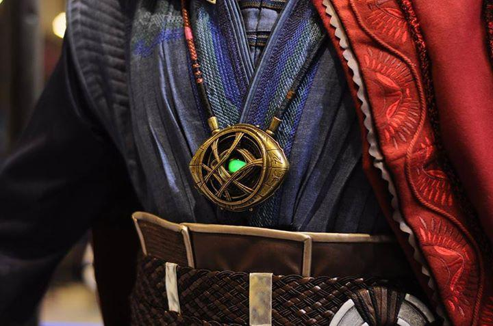
Joia da Alma
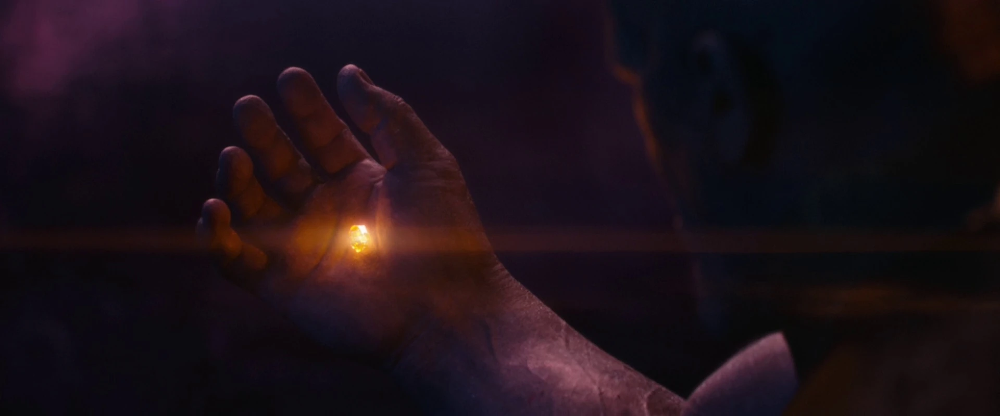
Possui poderes relacionados à alma e à vida. Sua localização foi mantida em segredo em Vormir, onde era
necessário um sacrifício para obtê-la. Aparece em Vingadores: Guerra Infinita e Vingadores: Ultimato.